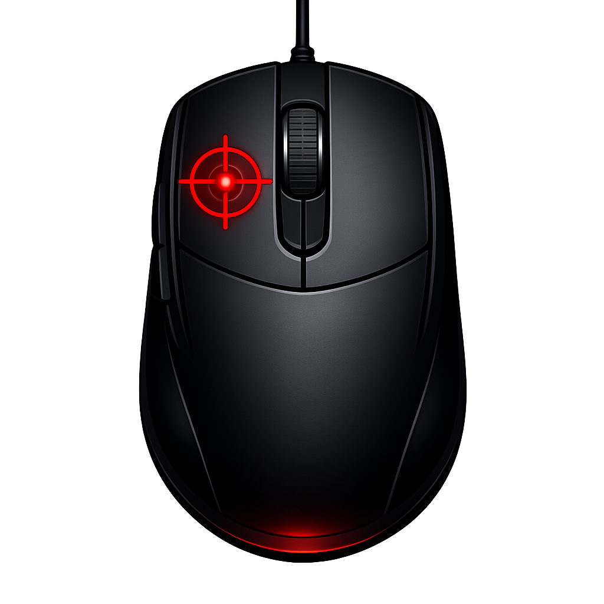
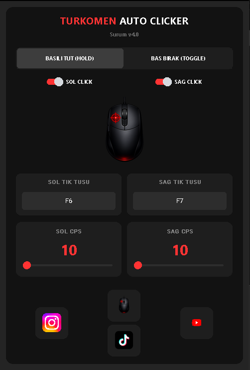
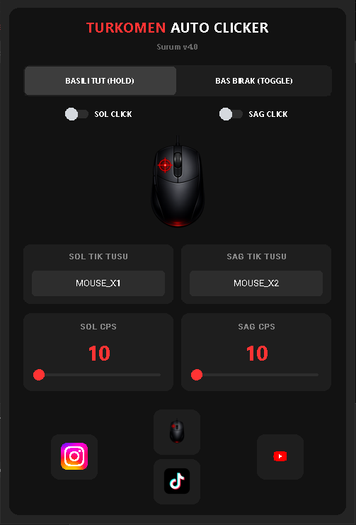
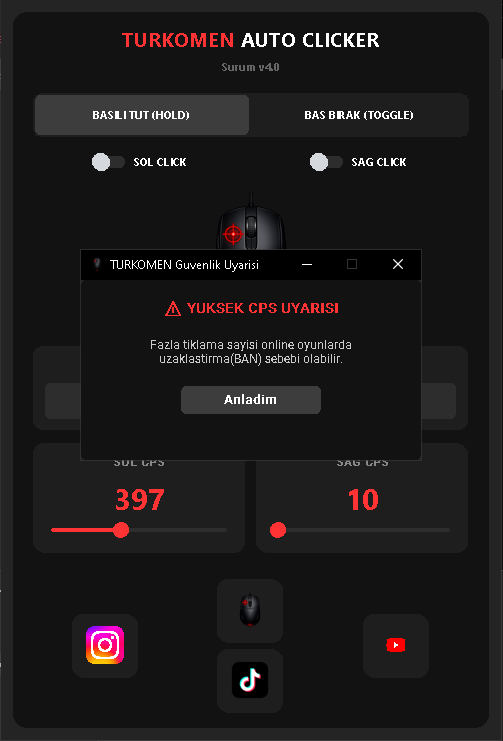
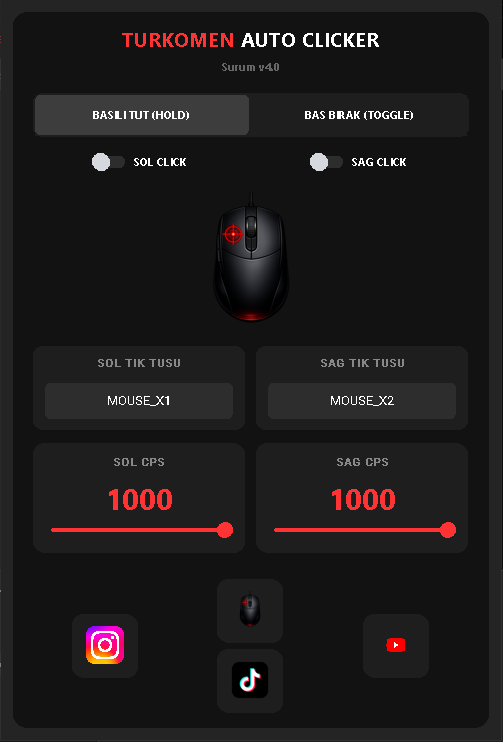

TURKOMEN AUTO CLICKER
Süper hızlı tıklama motoru, modern ve sadeleştirilmiş kontrol paneli ile işlerinizi ve oyunlarınızı kolaylaştırın. Sadece çalıştırın ve hızın keyfini çıkarın.

Süper hızlı tıklama motoru, modern ve sadeleştirilmiş kontrol paneli ile işlerinizi ve oyunlarınızı kolaylaştırın. Sadece çalıştırın ve hızın keyfini çıkarın.



